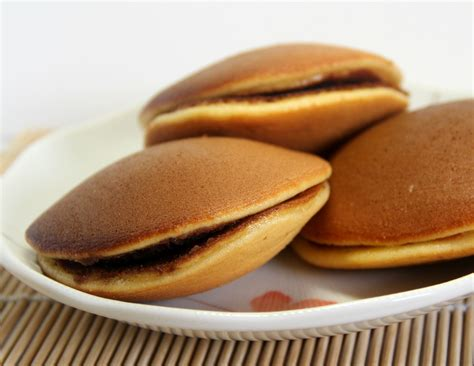
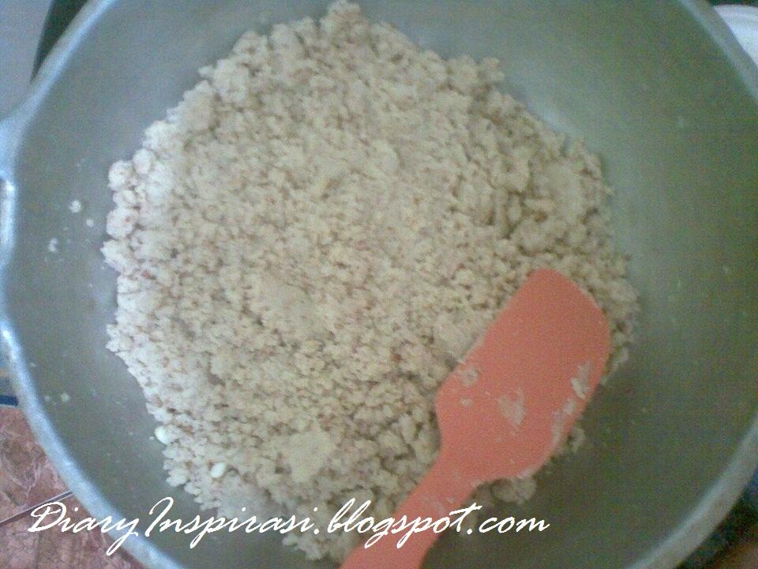
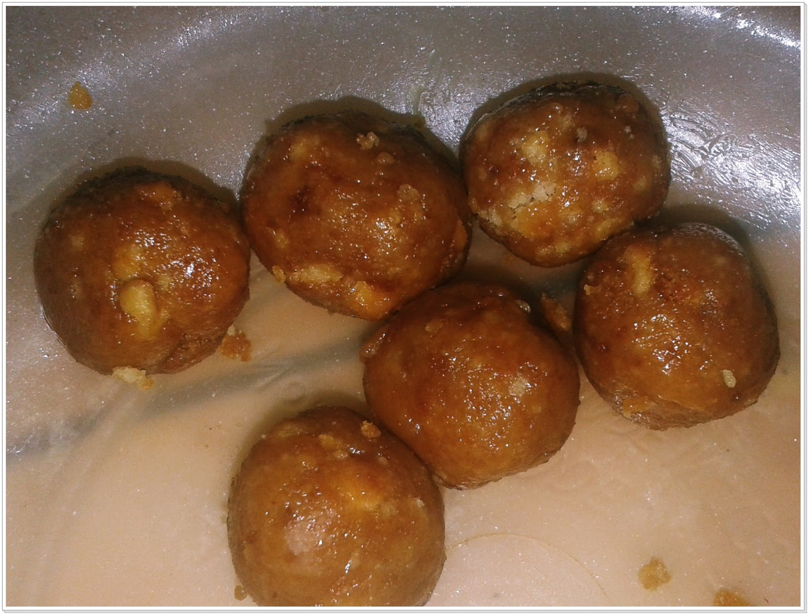
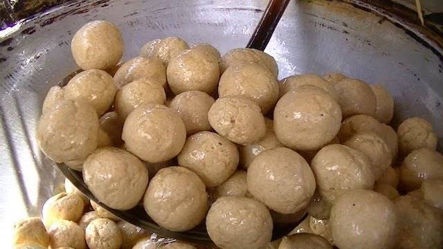

Resep Kue Maryam
Bahan-Bahan:

- 250 gr tepung terigu
- 1 butir telur
- 3 sdm margarin lelehkan
- 300 ml air hangat
- 2 sdm susu bubuk
- 1/2 sdt garam
- margarin leleh untuk olesan
- minyak untuk merendam
Langkah - Langkah
- Campur semua bahan menjadi satu

- Uleni sampai kalis jangan takut jika adonan lengket, lumuri tangan sesekali. Uleni sampai kalis

- Kalisnya adonan canai tidak sekalis adonan ya, kira2 seperti ini sudah cukup
